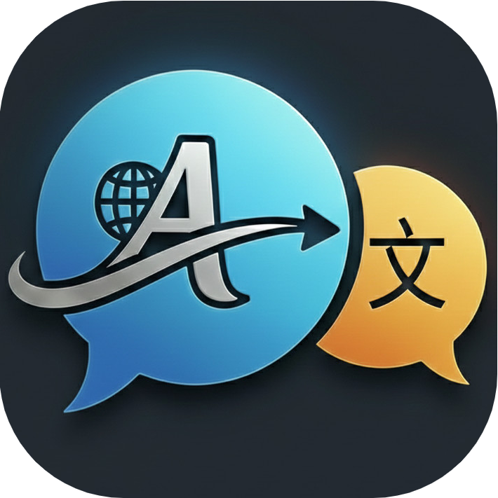
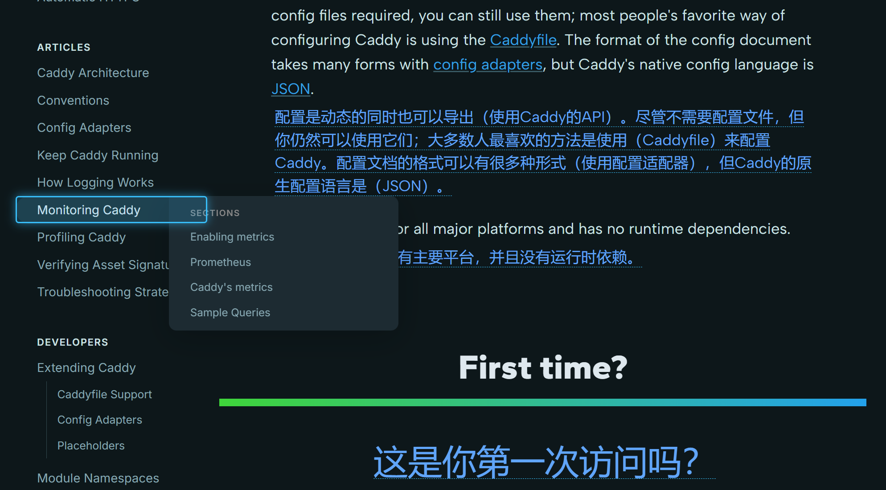
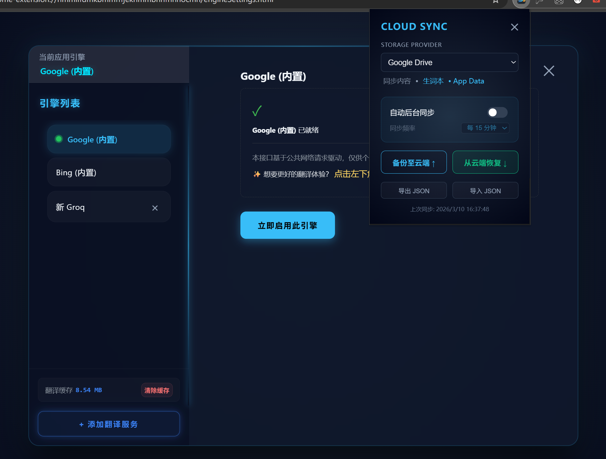

Mira Translator | 米拉翻譯器
Ultra-lightweight (0.3MB) | Privacy-First | Highly Intuitive Translation Tool
極致輕量 (0.3MB) | 隱私至上 | 高度直覺的翻譯工具
Mira Translator is a translation tool that pursues ultimate aesthetics and performance. With a tiny footprint of only 0.3MB, it remains completely free, without memberships, advertisements, or any registration required.
Mira Translator 是一款追求極致美學與性能的翻譯工具。體積僅 0.3MB，堅持完全免費、無會員、無廣告，且無需註冊登錄。
🌟 Core Features (核心亮點)
Precisely define translation areas with a single click for a truly "What You See Is What You Get" experience.
通過直覺的點擊，定義網頁翻譯區域，實現「所見即所得」的定制。
Instant word lookup on YouTube subtitles, seamlessly synced with your Google Drive vocabulary book.
YouTube 場景下，雙擊字幕單詞瞬間查詞並存入 Google Drive 同步的生詞本。
Smartly locks high-quality AI translations to save API costs while maintaining top-tier quality.
智能鎖定高質量 AI 翻譯結果，在節省 API 消耗的同時守住質量底線。
Serverless architecture. All configurations and data are privately synced via your own Google Drive.
無後端服務器，支持通過 Google Drive 私有雲同步配置與數據。
📸 Features & Gallery (功能圖賞)
1. Immersive Video Learning (沉浸式影片學習)

Enhance your YouTube experience with elegant bilingual subtitles and instant lookup.
提升您的 YouTube 體驗，提供優雅的雙語字幕渲染與即時查詞功能。
2. Precision Visual Picker (精準可視化拾取)

Control your reading flow. Define translation areas on any website with one click.
掌控您的閱讀流。點擊即可自定義任何網頁上的翻譯區域。
3. Smart Engine & Private Sync (智能引擎與私密同步)

Powerful engine management with persistent AI cache and private Google Drive sync.
強大的引擎管理，具備持久化 AI 緩存與 Google Drive 私有雲同步功能。